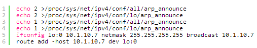

KeepAlived双主模式高可用集群
一、keepalived简介
keepalived是vrrp协议的实现，原生设计目的是为了高可用ipvs服务，keepalived能够配置文件中的定义生成ipvs规则，并能够对各RS的健康状态进行检测；通过共用的虚拟IP地址对外提供服务；每个热备组内同一时刻只有一台主服务器提供服务，其他服务器处于冗余状态，若当前在线的服务器宕机，其虚拟IP地址将会被其他服务器接替（优先级决定接替顺序），实现高可用为后端主机提供服务。
二、keepalived组件
Keepalived组件介绍
core:keepalived核心组件，主进程的启动和维护，全局配置等。
vrrp stack:keepalived是基于vrrp协议实现高可用vps服务，vrrp则为相关子进程为其提供服务
check:检测keepalived的健康状态相关进程
system call:系统调用
watch dog:监控check和vrrp进程的看管者，check负责检测器子进程的健康状态，当其检测到master上的服务不可用时则通告vrrp将其转移至backup服务器上。
三、keepalived配置
实验拓扑图如下：

keepalived主配置文件主要分为三段：global_defs、vrrp_instance、virtual_ip address,如下详解：
示例：
编辑/etc/keepalived/keepalived.conf配置文件，将此文件负责给另一个台keepalived服务器，相应的修改其优先级及其state状态信息


使用lvs-dr相同的方法配置Real Server1/Real Server2:

分别给Real Server提供测试页面及其给keepalived节点配置应急响应页面

配置成功后启动keepalived及其后端主机，在keepalived节点上查看其相应的ipvs信息：

现在两节点上的keepalived均已启动


模拟master节点故障查看其backup节点，则全部的虚拟IP地址转换到backup节，实现地址漂移如下：

本文采用rr算法调度测试结果图：

模拟后端Real Server一台和全部宕机，相应的响应页面及应急页面：

出现上诉的结果说明你配置的keepalived高可用集群已经实现高可用，可换为浏览器进行测试，或将后端主机搭建相应的服务进行测试查看其是否按照你定义的调度算法进行轮询。
作者：小耳朵
来源：http://purify.blog.51cto.com/10572011/1867346